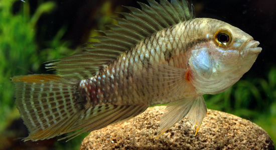
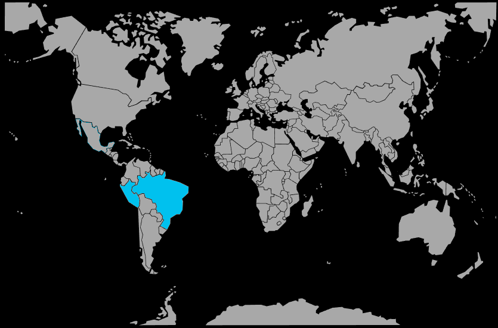

Systématique
- Ordre : Cichliformes
- Famille : Cichlidae
- Genre : Apistogramma
- Espèce : Apistogramma eunotus

Apistogramma eunotus est un petit cichlidé nain brésilien caractérisé par sa livrée jaune pâle à beige et ses trois taches noires distinctes sur le flanc (dont une au-dessus de la ligne latérale, une à la pédoncule caudale, et une à la base de la nageoire caudale).
C'est l'une des plus petites espèces du genre Apistogramma, avec des mâles n'excédant généralement pas 5 à 6 cm et des femelles encore plus réduites, ce qui en fait un pensionnaire idéal pour les nano-aquariums bien structurés.
C'est un poisson de caractère plutôt calme et discret, qui passe beaucoup de temps en retrait dans les zones basses et ombragées du bac, fouillant le substrat à la recherche de micro-proies.
Bien que territorial à l'égard de ses congénères, il montre une agressivité modérée comparée à d'autres apistogrammas; un bac bien cloisonné avec de nombreuses cachettes permet d'accueillir un couple ou un petit groupe dans le respect de leurs besoins territoriaux.
Mode : pondeuse sur substrat caché; la femelle sélectionne une cavité (noix de coco, tuile, pot de fleur couché) pour y déposer ses œufs et assure seule la protection de la ponte et des alevins.
La reproduction est régulière en aquarium si les conditions sont optimales : eau très douce, acide, changements d'eau fréquents, abondance de petites proies vivantes et surtout une femelle bien nourrie et sans stress.
Dimorphisme sexuel : les mâles sont sensiblement plus grands, avec des nageoires dorsale et caudale plus pointues et développées, tandis que les femelles restent plus trapues et plus petites, prenant une teinte dorée à orangée lors du frai.
Espérance de vie : environ 3 à 4 ans en captivité dans de bonnes conditions, avec une eau appropriée, une alimentation riche et des changements d'eau réguliers limitant l'accumulation de nitrates.
L'espèce habite les petits affluents forestiers de type eaux noires, lents et peu profonds, caractérisés par une végétation submergée dense, une litière de feuilles mortes, un substrat vaseux et riche en matière organique, et une eau très acide et désminéralisée.
Répartition

Origine naturelle :
- Bassin du Rio Negro, dans l'État d'Amazonas au nord du Brésil.
- Affluents et bras morts des petits cours d'eau forestiers de la région amazo-nienne brésilienne.
- Zones inondées (várzeas et igapós) proches des eaux noires.
La distribution d'Apistogramma eunotus est très localisée et spécifique aux systèmes aquatiques de la partie centrale et supérieure du bassin du Rio Negro, où l'espèce fréquente exclusivement les eaux noires cristallines de petits cours d'eau.
Paramètres de maintenance
Température : 24 à 28 °C.
pH : 4,0 à 6,0, eau très acide.
GH : 0 à 4 °dGH, eau très douce.
Courant : très faible, avec un brassage minimaliste et une filtration douce, idéalement sur tourbe ou sol technique acide pour maintenir des paramètres stables.
Volume conseillé : à partir de 40 à 60 L pour un couple, avec un sol sableux fin, nombreuses racines, feuilles mortes, plantes flottantes et petites cachettes pour la ponte.
Régime alimentaire
Régime : micro‑carnivore spécialisé; dans la nature, l'espèce se nourrit principalement de très petits invertébrés benthiques, copépodes, ostracodes, larves de moustiques et autres micro-organismes du substrat.
En aquarium, il est indispensable de proposer régulièrement des proies vivantes de très petite taille : microvers, artémias nauplii fraîchement écloses, daphnies, et poudres d'œufs d'artémia. Les granulés fins de qualité peuvent compléter ponctuellement.
Une alimentation insuffisante ou inadaptée (trop grosse) compromet rapidement la santé de l'espèce; plusieurs petits repas variés quotidiens, surtout le soir et à l'aube, favorisent la condition générale et les succès reproductifs.